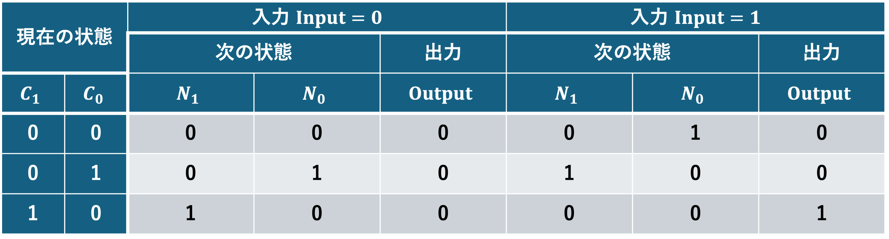
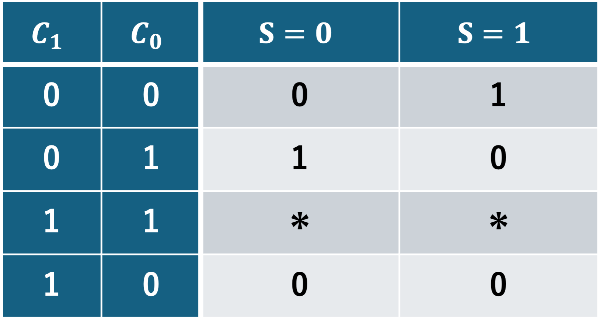
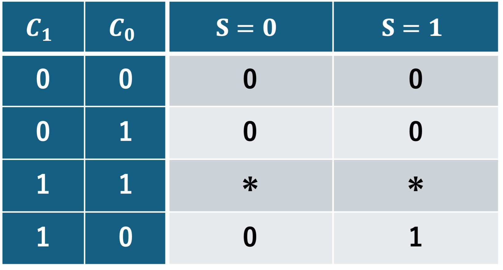

順序回路の設計法#
第9回Step4の回路の構成
順序回路#
順序回路：初期状態から始まり，決まった順序で状態遷移を行う機能を実現する回路．
状態遷移図：状態ノードと，入力条件付きの矢印（次状態）で表す．
順序回路の設計#
状態遷移図の作成：初期状態と終了状態を含む複数の状態を定義し，次に各状態への入力とそれにより生じる状態遷移と出力を定義する．
2進コード化：各状態と入出力を表する2進数の値を決め，1で作成した状態遷移図を2進数の値で描き直す．
状態遷移表の作成：現在の状態から入力により次の状態へ遷移し，出力する様子を状態遷移表にまとめる．
回路化：状態遷移表に従い，状態遷移図と同様の動作を行う順序回路を，フリップフロップと組合せ回路を用いて設計する．
例：3枚入れるとコーヒーが出る自動販売機#
1種類の硬貨のみを考え，硬貨を3枚入れるとコーヒーが出てくる自動販売機を実装する．
Step 1：状態遷移図の作成

Step 2：2進コード化
入力：硬貨を投入する/しない → 1,0
出力：コーヒーを出す/出さない → 1,0
現在の状態：硬貨の枚数0,1,2枚 → 00,01,10

Step 3：状態遷移表の作成

Step 4：回路化
入力：硬貨を投入する/しない(1,0) → \(S\), 1bit
出力：コーヒーを出す/出さない(1,0) → \(G\), 1bit
現在の状態：硬貨の枚数0,1,2枚(00,01,10) → \(C_1, C_0\), 2bit ※ 現在の状態は記憶されないといけない．
次の状態：硬貨の枚数0,1,2枚(00,01,10) → \(N_1, N_0\), 2bit
状態の(11)は使用されていないため，ドントケアとして扱える．
\(N_1\)のカルノー図は

となるから
\[ N_1 = C_1 \cdot \overline{S} + C_0 \cdot S \]
Note
演習2
\(N_0\)のカルノー図を作成し，\(N_0\)を加法標準形で表せ．
\(G\)のカルノー図を作成し，\(G\)を加法標準形で表せ．

